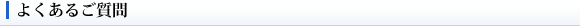

宮川町の歴史 その1
- 搬入・展示準備／搬出日は、展示日以外に取れますか？
- 使用日数は決まっていますか？
- 1日の使用時間は決まっていますか？
- 定休日はありますか？
- 駐車場はありますか？
- 人通りの様子はどのような感じでしょうか？
- このホームページへのエントリー（「展示の様子」に作品を掲載）はできますか？
- 作品の販売はできますか？
- オープニング・パーティーはできますか？
- 付帯設備は、どのようなものがありますか？
- 展示に当って、出展者側で準備しギャラリーに提出する書類等はありますか？
搬入・展示準備／搬出日は、展示日以外に取れますか？
各々一日取れます。搬入・展示準備／搬出日については、使用料はいただいておりません。
原則展示開始の３日前からとさせていただきますが、予約が入っていなければ、展示１週間前からでも受付いたします。
使用日数は決まっていますか？
最短４日間か、６日間です。曜日は問いません。
延長は一日単位で可能です。使用料は、日割りでアップしていきます。
1日の使用時間は決まっていますか？
原則１日７時間（閉戸まで）です。時間帯はご相談に応じます。
定休日はありますか？
夏休み定休が、７月１７日の祇園祭宵山から９月１６日までの２ヶ月、
冬休み定休が、１２月２６日から１月２５日の１ヶ月となっております。
駐車場はありますか？
ギャラリー前の通りを隔てた駐車場「タイムズ宮川筋」がございます。
終日２０分１００円、９台まで駐車可能です。
搬出入時の車も、この駐車場をご利用いただきます。
人通りの様子はどのような感じでしょうか？
周辺は、京都市東山区の観光コースに組み込まれております。
京おどり開催中は、特に人通りが多くなります。
このホームページへのエントリー（「展示の様子」に作品を掲載）はできますか？
可能です（無償）。展示後に掲載内容を出展者と相談の上、掲載させていただきます。
作品の販売はできますか？
可能です（販売マージンは不要です）。
但し、通行人の呼込みは不可とさせていただきます。
オープニング・パーティーはできますか？
可能です。オープニング・パーティーをされるにあたっては、あらかじめパーテイ内容・時間帯と日時をご連絡ください。
付帯設備は、どのようなものがありますか？
基本設備として、温調、冷蔵庫、湯沸しポット、ＣＤデッキ、掃除機がございます。
収納は、
・フロアーA 路地側・・・事務デスク
・フロアーB 奥和室・・・押入れ、洋服収納
をご利用ください。
展示に当って、出展者側で準備しギャラリーに提出する書類等はありますか？
１：展示会の案内状（葉書）５０枚～１００枚
２：Ａ３サイズのギャラリーに掲載するポスター（キャッチコピー） ２枚
３：出展者の作品経歴と作者紹介
上記3点をご提出いただいております。